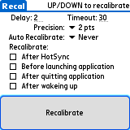

Recal is a quick hack I use when my Palm (Vx, Zire or Tungsten T) loses its digitizer settings. This unfortunately happens once in a while. The only way in getting the device back on track is to recalibrate the digitizer using the appropriate panel in the Preferences application. But how do you tap your way into the calibration screen when the digitizer is in a messed up state (which came first: the chicken or the egg? And who cares?)
Recal to the rescue ...
Installation of Recal is like installing any other Palm OS program:
When the synchronization is done you will have a 'Recal' icon in the Unfiled category on your Palm PDA. Feel free to move Recal to another category.
Recal auto-starts after a HotSync or a Soft Reset of the device. If you do a Hard Reset all applications and data are lost - even Recal will not survive this. When Recal is started this way the Calibrate Digitizer dialog is launched after a configurable amount of time and you will have to complete a full calibration before moving on to something else.
The first time you launch Recal you will be prompted to calibrate your device. The settings will be saved and used during auto calibration.
Note! Recal is not compatible with the system digitizer calibration setting dialog. You can use both. But Recal uses it's own settings when doing auto calibration.
By tapping the Recal icon you will be able to launch the Calibrate Digitizer dialog by tapping the button or pressing the Up or Down key. The Delay field controls the delay (in seconds) before launching the Calibrate Digitizer dialog upon a initial HotSync or a Soft Reset.
The Timeout value given is the timeout the digitizer screen will be idle between taps.
The Precision value is the precision of taps wíthin the crossharis. The lower the number selected, the finer the precision. On a healthy device the precision should be set to 1 pt.
Select the delay between auto calibrations or set the delay to Never to .. never auto calibrate. Note! On pre 3.2 Palm OS devices the display will most likely turn on when auto calibrating. So, beware - if you have a device timeout on say 2 minutes and you set auto calibrate to 1 minute you may experience that the device will have it's battery drained. Of course, if you really need to auto calibrate your device every minute you might as well get a new device ;-) And no, there is nothing I can do to help this. PalmSource/Access made this by design.
Depending on your device you may see one or more of the following options:
That is all there is to it. Enjoy! :o)